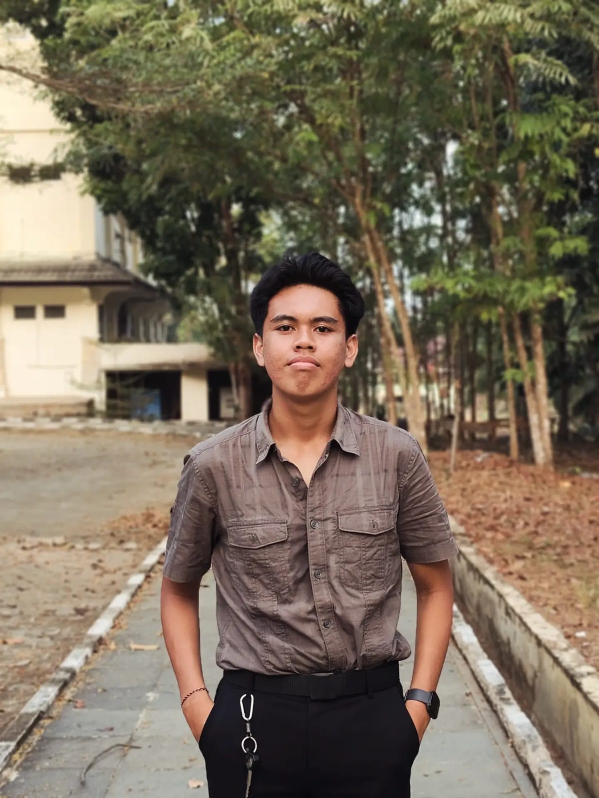
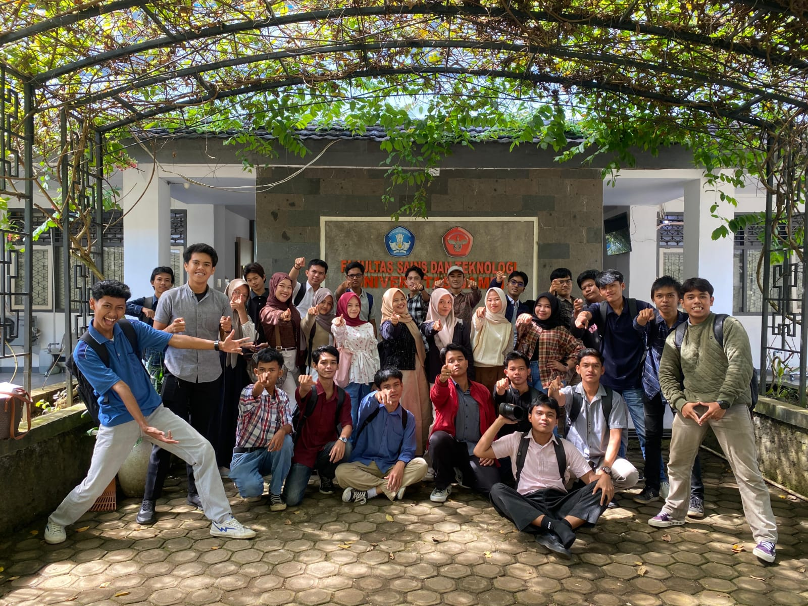
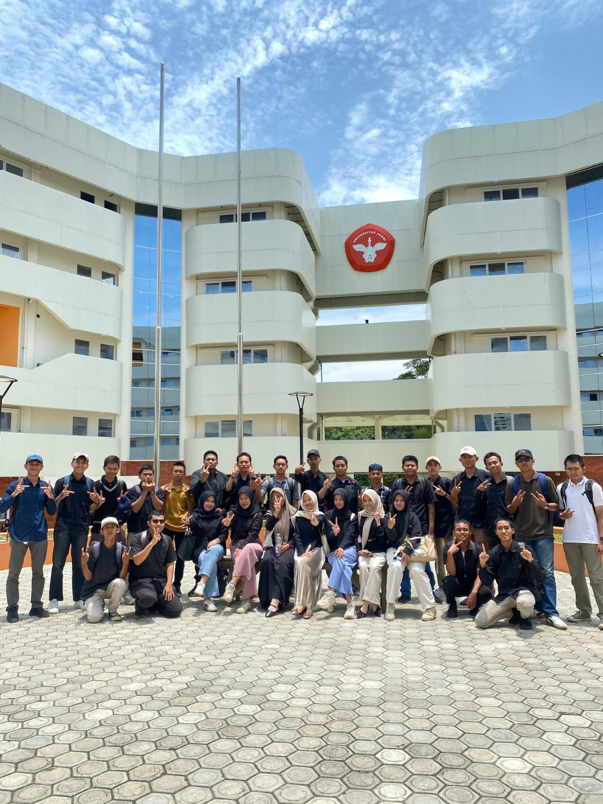
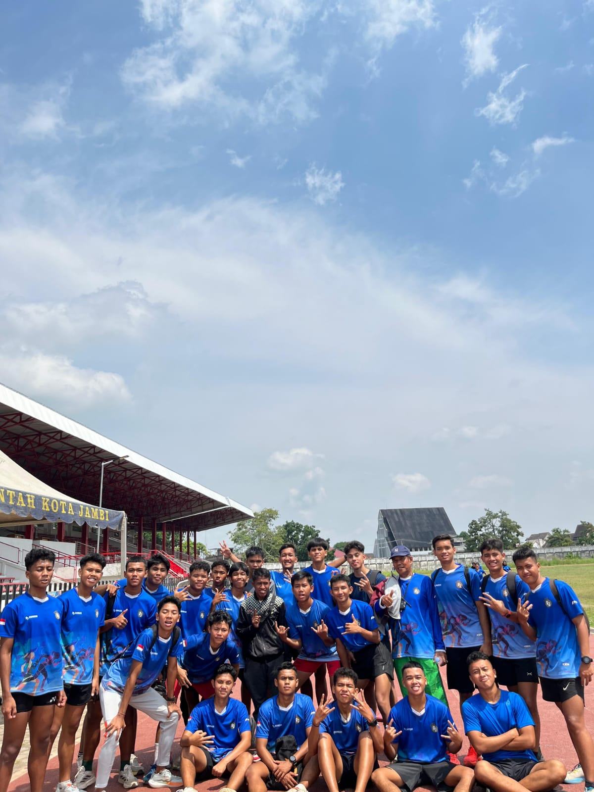
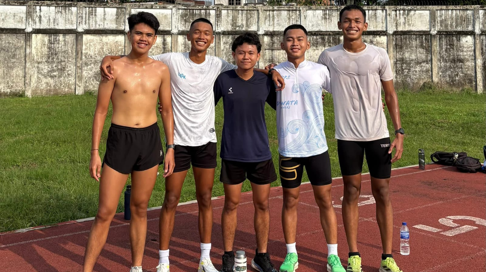

01
Informatics Student - Universitas Jambi
Muhammad Syach Fayrus.
Keep Learning and Growing
I'm just an ordinary human being living life, becoming a little better every day, learning from every experience, chasing the things that matter, and enjoying the journey along the way.

Tech
Coding • Informatics • Projects
Life
Studying • Editing • Running
Visual
Cinematic • Photography • Storytelling
About Me
I study Informatics at Universitas Jambi. Most of what I know so far comes from building things: coursework, small experiments, and the occasional program that breaks in a way I didn’t expect. I like programming, and I like finding out why something works.
When I’m not at a screen, I’m usually running long distances or holding a camera. I like recording moments, places, and whatever I happen to be doing that day. Filming makes me look at ordinary things a bit longer than I normally would.
This site is where those habits end up in one place.
- Based in
- Jambi, Indonesia
- Studying
- Informatics, Universitas Jambi
- Focus
- Software & Computer Science
- Away from code
- Long-distance running, cinematic videography, photography
- Currently
- Learning & building
The Tools Used
What I’ve used for coursework and personal projects so far.
Programming
- Python
- C
- C++
- HTML
- CSS
- MIPS Assembly
Tools
- VS Code
- Git & GitHub
- WSL Ubuntu
- Google Colab
- MARS MIPS Simulator
- Oracle Database
Areas
- Software Development
- Programming
- Computer Science
- Database
- Artificial Intelligence
- Operating Systems
- Web Development
Selected Projects
Coursework and personal experiments. All of it is student work.
-
Pengenalan Pemrograman
A collection of programming exercises, assignments, and small projects created while learning programming fundamentals.
Python, coursework
View on GitHub -
Basis Data & ERD
Academic work involving ERD, normalization, relationships, and database design.
Oracle, database design
View on GitHub -
Concurrency Experiments
Experiments with pthreads, mutexes, condition variables, parallel processing, and thread pools.
C, operating systems
View on GitHub -
This Website
A static personal site written by hand with HTML, CSS, and vanilla JavaScript. No frameworks, no build step.
HTML, CSS, JavaScript
View on GitHub
Cinematic
A collection of moments, places, and stories captured through my camera.
02
STUDENT CENTER
03
IFORIA 2026
Stills
Frames from campus, daily life, and behind the camera.




Running
Another way I spend time outside the screen.
Running keeps me disciplined, and it resets my head after too many hours in front of a screen.
- 5K
- 19:41
- 3 Sep 2025
- 10K
- 41:28
- 8 Jan 2026
- 15K
- 1:11:26
- 30 Oct 2025
- 21K
- 1:53:52
- 20 Aug 2025

Connect With Me
Collab?.
Interested in collaborating, talking about technology, running, or video editing? Feel free to reach out.
syachfayruz1@gmail.com